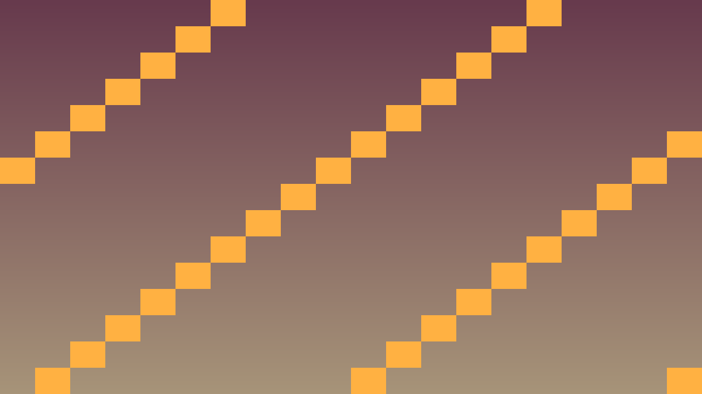
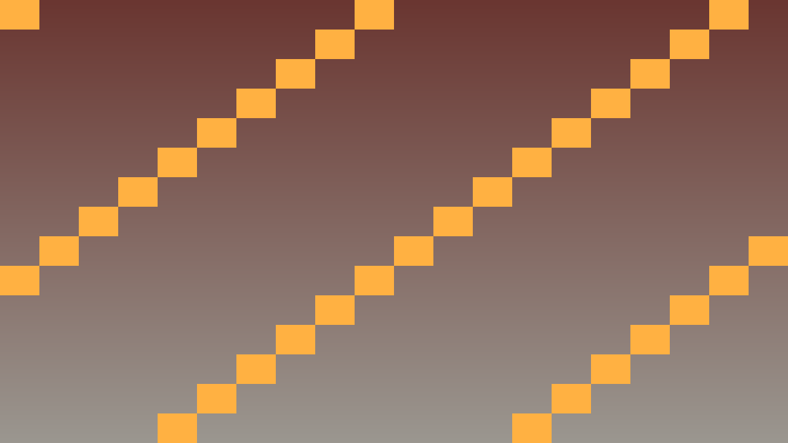

4.6 Noslēguma projekts: Šaušanas spēle skatā no augšas
Stundas uzdevums: Apvienot data structure (datu struktūras), AI (mākslīgais intelekts) un object pooling (objektu atkārtota izmantošana) pilnvērtīgā šaušanas spēle skatā no augšas.
80 min plāns: Ievads un kritēriju pārruna (~10 min) · 1. uzdevums (~20 min) - spēlētājs ar kustību un mērķēšanu · 2. uzdevums (~25 min) - divi ienaidnieku type (tipi) ar AI · 3. uzdevums (~20 min) - viļņu sistēma un rezultāts · Iesniegšana (~5 min).
Pirms sāc: šis ir 4. tēmas noslēguma projekts. Izmanto visu apgūto: sarakstus, dictionary (vārdnīcas), state machine (stāvokļu mašīnu), pathfinding (ceļa meklēšana) un object pool (lādiņu krātuvi). Sāc ar VIENU ienaidnieka type.
Failu ceļi: ceļi ir norādīti no tava Godot projekta mapes, kur atrodas project.godot; piemēram, Scripts/Player.cs Godot panelī ir res://Scripts/Player.cs. Ja norādītais fails jau ir izveidots, atver un papildini to.
Jaunus C# failus veido mapē Scripts, scēnas — norādītajā ceļā; trūkstošās mapes izveido. Ja tavā projektā skripts glabājas citur, rediģē esošo failu. using direktīvas raksti faila sākumā, laukus un metodes — klases iekšienē. Esošu _Ready() vai _PhysicsProcess() papildini, neveido otru tāda paša nosaukuma metodi.
Teorija: 2D orientācija plaknē un daudzkomponentu sistēmas arhitektūra
2D virziena vektora normalizācija un orientācija pret kursoru (LookAt)
Apvienojot horizontālo un vertikālo ievadi 2D plaknē, iegūst astoņu virzienu kustības vektoru. Virzoties pa diagonāli ar vektoru (1, 1), tā garums pēc Pitagora teorēmas ir √(1² + 1²) ≈ 1,41, tāpēc bez korekcijas kustība slīpi būtu par aptuveni 41% ātrāka nekā taisni pa asi. Metode .Normalized() (uz nenulles vektora) samazina vektora garumu līdz precīzam vieninieka garumam 1, saglabājot nemainīgu kustības ātrumu visos virzienos.
Lai Node2D mezglu pagrieztu pret konkrētu punktu pasaules koordinātās, kursoru nolasa ar GetGlobalMousePosition() un izsauc LookAt(merkaPunkts): mezgls pagriežas tā, lai tā lokālā priekšējā ass +X (Transform.X) rādītu tieši uz mērķi:
Vector2 merkaPunkts = GetGlobalMousePosition();
LookAt(merkaPunkts);
Vector2 prieksejaisVirziens = Transform.X; // Vienības vektors skatīšanās virzienā.Modulāra arhitektūra, polimorfisms un posmu pārvaldība
Apvienojot vairākas apakšsistēmas vienā reāllaika lietotnē, tīra arhitektūra (architecture) nošķir katras klases pienākumus — līdzīgi kā lidostas dispečeru tornis plāno reisu secību un atjauno informācijas tablo, bet katra tehniskā vienība uz skrejceļa pati apbrauc šķēršļus pēc savas lomas noteikumiem:
- Mantošana un polimorfisms: kopīgo stāvokļu mašīnu un ceļa meklēšanu ievieto bāzes klasē, bet specializētos kustības vai darbības parametrus — atvasinātajās klasēs. Glabājot visus aktīvos objektus vienā
List<BazesTips>sarakstā, tos apstrādā vienots cikls bezifpārbaudēm katram paveidam. - Posmu pārvaldība un datu struktūras: atsevišķs vadītāja mezgls sarakstā (piemēram, izmantojot kompaktu C# datu ierakstu
recordvaistruct) glabā nākamo posmu parametrus un pāriet pie nākamā posma brīdī, kad aktīvo objektu skaits sasniedz nulli (Count == 0), vienlaikus atjaunojot lietotāja saskarnes (UI) rādītājus. - Veiktspēja un slāņu izolācija: pieaugot aktīvo objektu skaitam un skaitļošanas sarežģītībai (
computational complexity), objektu krātuve (Object Pooling) novērš atmiņas svārstības, savukārt sadursmju slāņi (Collision Layer / Mask) nodrošina, ka objekta radītās saskares zonas nereaģē pašas ar savu avotu.
Kā šo izmantot projektā
Atceries: ar redzamu efektu redaktorā nepietiek. Paskaidro, kura C# class (klase) glabā stāvokli, kura method (metode) to maina un kā Godot node (mezgls) struktūra izmanto šo kodu.
Pārbaudi: C# kodā pamatoti izvēlēti List (saraksts), Dictionary vai HashSet (jaucējkopa), AI stāvokļi ir skaidri, un sarežģītākas sistēmas var profilēt vai atkļūdot.
public class AiDataCheckpoint
{
public string Lesson = "4.6 Noslēguma projekts: Top-down šautene";
public bool UsesCSharp = true;
public bool ChoosesContainer = true;
public bool SeparatesAiState = true;
public bool HandlesRemovalSafely = true;
}Praktiskie uzdevumi
1. uzdevums -
Spēlētājs ar kustību un mērķēšanu
Kur strādāt: Papildini Scripts/Player.cs, kas piesaistīts Scenes/Player.tscn saknei; kustību un mērķēšanu raksti _PhysicsProcess(). Izmanto esošos Scripts/Bullet.cs, Scripts/BulletPool.cs un bullet.tscn no 4.5.
Beigās spēlētājs pārvietosies ar WASD un šaus peles virzienā.
- Izveido spēlētāja class ar 8 virzienu kustību un normalizētu vector (vektoru).
- Paņem peles pozīciju ar
GetGlobalMousePosition(). - Pagriez spēlētāju pret peli ar
LookAt(...). - Pievieno šaušanu no 4.5 stundas ar object pool.
- Izšauj lādiņu spēlētāja skatīšanās virzienā.
- Būvē un pārbaudi kustību visos virzienos un šaušanu.
- Pārliecinies, ka diagonālā kustība nav ātrāka.
Gatavs, kad: spēlētājs kustas visos virzienos, vienmēr skatās uz peli un šauj tieši tajā virzienā.
2. uzdevums -
Divi ienaidnieku type ar AI
Kur strādāt: Kopīgo ienaidnieka kodu turpini Scripts/Enemy.cs; atvasinātās klases izveido Scripts/Chaser.cs un Scripts/Shooter.cs. Kopīgo sarakstu un tā ciklu ievieto Scripts/WaveManager.cs, piesaistot to Node mezglam Scenes/Arena.tscn.
Beigās ienaidnieki uzvedīsies atšķirīgi.
- Izveido base class (bāzes klasi)
Enemyar state machine no 4.3 stundas. - Izveido derived class (bērna klasi)
Chaser, kas dzenas ar pathfinding. - Izveido otru derived class
Shooter, kas apstājas un šauj no attāluma. - Glabā visus ienaidniekus vienā
List<Enemy>. - Uzraksti vienu loop (ciklu), kas atjaunina visus ienaidniekus.
- Pievieno ienaidniekiem HP un dzēšanu, kad tie tiek nošauti.
- Pārbaudi, ka abi type uzvedas atšķirīgi.
// Projekta klašu hierarhijas pārskats:
public partial class Player : CharacterBody2D { /* 8 virzienu WASD + mērķēšana pret peli + šaušana */ }
public partial class Enemy : CharacterBody2D { /* bāzes stāvokļu mašīna + ceļa meklēšana + HP */ }
public partial class Chaser : Enemy { /* ātri dzenas tuvumā (vai FastEnemy / Brute variācijas) */ }
public partial class Shooter : Enemy { /* ietur distanci un šauj no attāluma */ }
public partial class Bullet : Area2D { /* atkārtoti lietojams lādiņš no BulletPool */ }
public partial class WaveManager : Node { /* pārvalda ienaidnieku viļņus un rezultātu */ }Gatavs, kad: viens ienaidnieku type dzenas pakaļ, otrs apstājas un šauj, un abus apstrādā viens loop.
3. uzdevums -
Viļņu sistēma un rezultāts
Kur strādāt: Viļņu izveidi, punktus un HUD atjaunošanu pievieno Scripts/WaveManager.cs; spēlētāja HP apstrādi — Scripts/Player.cs. HUD mezglus izveido Scenes/Arena.tscn.
Beigās spēle kļūs arvien grūtāka un skaitīs punktus.
- Izveido class
WaveManagerar laukuint wave = 1;. - Radi katrā vilnī vairāk ienaidnieku nekā iepriekšējā.
- Pārej uz nākamo vilni, kad visi ienaidnieki iznīcināti.
- Pievieno punktu skaitītāju un HUD (spēles informācijas panelis) ar vilni, punktiem un HP.
- Pievieno spēles beigas, kad spēlētāja HP sasniedz nulli.
- Izspēlē vismaz trīs viļņus.
- Veic commit (izmaiņu fiksējums) un push (nosūtīšana uz attālo krātuvi).
Pilnas spēles kopsavilkums pārbaudei: 8 virzienu kustība un mērķēšana ar peli, ceļa meklēšana ap šķēršļiem, vismaz divi ienaidnieku tipi (paplašināmā variantā arī trīs, piemēram, ātrais, smagais un šāvējs), pieaugoši viļņi, kā arī punktu, viļņa un HP uzskaite (savācamie HP un munīcijas bonusi — papildu uzdevumā).
Gatavs, kad: spēle pāriet no viļņa uz vilni, katrā ir vairāk ienaidnieku, un beidzas, kad spēlētājs zaudē HP.
Papildu uzdevums - Pievieno savācamos bonusus
Kur strādāt: Izveido Scenes/Bonus.tscn ar Area2D sakni un piesaisti tai Scripts/Bonus.cs savākšanas kodam. Bonusu radi no Scripts/WaveManager.cs, bet HP un munīcijas maiņu pievieno Scripts/Player.cs.
Ja pamatdarbs ir gatavs, ļauj spēlētājam atjaunot HP un munīciju.
- Izveido
Area2D(2D saskares zona) bonusa scēnu ar veiduHPvaiAMMO. - Radi bonusu nejaušā vietā pēc katra viļņa.
- Palielini attiecīgo vērtību, kad spēlētājs to savāc.
- Ierobežo HP, lai tas nepārsniegtu maksimumu.
- Pārbaudi abus bonusa veidus.
Gatavs, kad: bonusi parādās pēc katra viļņa un atjauno HP vai munīciju, nepārsniedzot maksimumu.
Ko sagatavo
Stundas mērķis: Tev ir izspēlējama šaušanas spēle skatā no augšas: spēlētājs ar 8 virzienu kustību un mērķēšanu pret peli, vismaz divi ienaidnieku type ar atšķirīgu AI, viļņu sistēma ar augošu grūtību un HUD ar punktiem un HP.
GitHub krātuvē jābūt:
- Viss projekts ar C# skriptiem, scēnām un projekta failiem.
- README.md ievietota video saite, kurā izspēlē vismaz divus viļņus un redzami abi ienaidnieku type.
- Faili
Player.cs,Enemy.cs, abu ienaidnieku type class unWaveManager.cs. - README.md: kā tavi divi ienaidnieku type atšķiras un kāpēc abus var apstrādāt vienā loop.
Kā iesniedz: Veic commit un push. Skolotāja norādītajā vietā ievieto tikai GitHub krātuves saiti; visiem prasītajiem failiem, README.md pierakstiem un pierādījumiem jābūt pašā krātuvē.
Biežākās kļūdas
- Lag (aizture) ar daudziem enemies: Pārliecinies, ka NavigationAgent2D (2D ceļa sekošanas mezgls) update_freq ir saprātīgs.
- Bullets sit savus: Pārbaudi sadursmju slānis - Player bullets jāignore Player.
- Wave neuzsākas: Timer (taimeris) vai counter sajaucies - debug (atkļūdošana) ar print statements.
Godot ekrānuzņēmumi


Koda piemērs (paplašināts)
using Godot;
using System.Collections.Generic;
public enum EnemyType { Fast, Brute, Shooter }
public partial class WaveManager : Node
{
private int currentWave = 0;
private float waveTimer = 0.0f;
private readonly List<Enemy> activeEnemies = new();
private record Wave(int FastEnemies, int Brutes, int Shooters);
private readonly List<Wave> waves = new()
{
new Wave(3, 0, 0), // wave 1
new Wave(5, 1, 0), // wave 2
new Wave(6, 2, 1), // wave 3
new Wave(8, 3, 2), // wave 4
new Wave(10, 5, 3) // wave 5 + boss
};
public override void _Process(double delta)
{
waveTimer -= (float)delta;
if (activeEnemies.Count == 0 && waveTimer <= 0)
{
StartNextWave();
}
}
private void StartNextWave()
{
if (currentWave >= waves.Count)
{
GD.Print("All waves complete!");
return;
}
Wave wave = waves[currentWave];
for (int i = 0; i < wave.FastEnemies; i++) Spawn(EnemyType.Fast);
for (int i = 0; i < wave.Brutes; i++) Spawn(EnemyType.Brute);
for (int i = 0; i < wave.Shooters; i++) Spawn(EnemyType.Shooter);
currentWave++;
waveTimer = 30.0f;
}
}